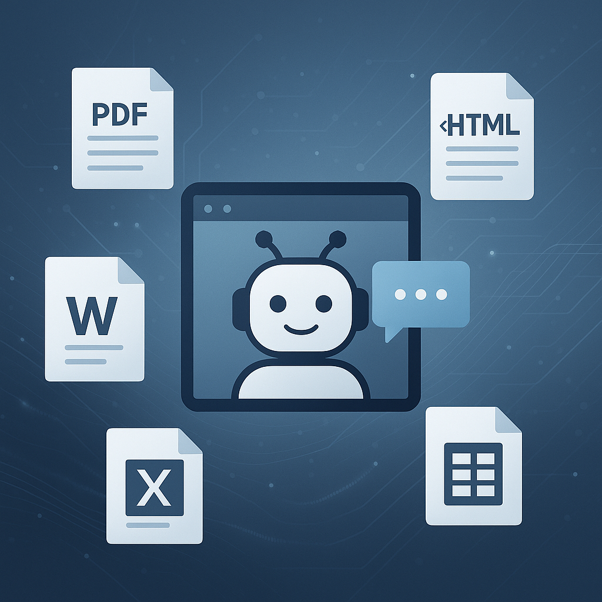

Une IA au service de la documentation
Ce projet, mené dans le cadre de mon stage chez AMDIE, a pour objectif de concevoir un chatbot intelligent capable de répondre à des questions précises à partir de documents internes : PDF, Word, tableaux Excel, pages HTML, voire images.
Plutôt que de "tout savoir", ce chatbot va chercher dans les documents les plus pertinents pour répondre, grâce à l’approche RAG – Retrieval-Augmented Generation. C’est un projet très stimulant, car il mêle NLP, vectorisation, gestion des droits d’accès, et architecture multi-agents.
Ce que j’ai mis en place
- Un pipeline d’extraction multi-formats :
Unstructured,Pandas,BeautifulSoup… - Stockage vectorisé des documents avec
HuggingFace embeddingsdansChromaDB - Filtrage fin selon les rôles et les droits d’accès (via les métadonnées)
- Agents spécialisés (calcul, extraction, réponse) orchestrés pour dialoguer
- Génération des réponses via
Gemini, en s’appuyant uniquement sur les sources autorisées
En cours jusqu’à fin août
Le projet est toujours en cours de développement. La structure technique est en cours de mise en place, et les prochaines étapes porteront sur :
- Renforcement de la gestion des logs et du suivi utilisateur
- Ajout d’une interface web pour la démonstration
- Amélioration de la reformulation des requêtes
- Tests de modèles LLM légers pour une exécution locale
Une mise à jour de cette page (avec captures) est prévue dès la fin du stage.

← Retour aux projets